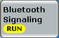
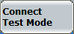
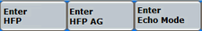
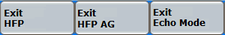
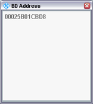
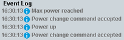
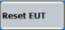
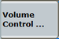

The individual connection states are controlled via the ON | OFF key, via hotkeys and via the EUT.
The available hotkeys depend on the current connection state. Below all possible hotkeys are described.
For background information, refer to chapter "Signaling States".
The ON | OFF key is used to turn on the signaling application in standby state or off. The current state is shown by the softkey. The signal transmission can be switched off any time, independent of the current connection state. A yellow hourglass symbol indicates that the signaling generator is turned on or off.

This hotkey is only available in standby state and if either BR or EDR burst type is selected. It activates the paging state on the R&S CMW with the target selected in "For Paging".
If paging is successful, the R&S CMW goes to the connected state.
Remote command:These hotkeys are only available if operating mode is set to "Profile" / "Audio Echo Mode", see "Operating Mode, Profile". They establish an audio link for hands-free profile (HFP), hands-free audio gateway profile (HFP AG), audio echo mode, or A2DP.
Option R&S CMW-KS602 is required for audio profiles.
Option R&S CMW-KS603 is required for A2DP.
Remote command:
This hotkey is only available in standby state and if either BR or EDR burst type is selected. It activates the paging state on the R&S CMW with the target selected in "For Paging".
If paging is successful, the R&S CMW goes to the test mode connected state.
Prerequisite: the EUT with enabled test mode (typically enabled by typing a vendor-specific key combination at the EUT, for example #123456789#).
Option R&S CMW-KS610 is required.
While the EUT is connected, the signaling application provides a trigger signal, see "Trigger Signals".
Remote command:Checks whether it is possible to control the EUT connected via USB interface. The R&S CMW sends a reset command to the EUT and waits for the EUT's response via RF link. The result is displayed in a pop-up dialog.
If there was failure, it is necessary to adjust the "HW Interface" or the transmission parameters settings, typically the baud rate, see "USB to RS232".
This hotkey is only available if LE burst type is selected.
Option R&S CMW-KS611 is required.
Remote command:This hotkey is only available in the connected state or in the connected in test mode state. It requests the R&S CMW to close the ACL connection and to revert to standby state.
Remote command:
These hotkeys are only available if operating mode is set to "Profile" / "Audio Echo Mode", see "Operating Mode, Profile". They re-establish an audio link for hands-free profile (HFP), hands-free audio gateway profile (HFP AG) or audio echo mode.
Option R&S CMW-KS602 is required for audio profiles.
Remote command:
These hotkeys are only available if an audio link is established. They release the audio link and return to the connected state (ACL link). The audio connection can be re-established via "Enter HFP / Enter HFP AG / Enter Echo Mode (hotkey)".
Option R&S CMW-KS602 is required for audio profiles.
Remote command:This hotkey sends a reset EUT command for BR/EDR via USB connection.
Option R&S CMW-KS610 is required.
Remote command:This hotkey is only available in standby state and if either BR or EDR burst type is selected. It activates the inquiry state on the R&S CMW. The discovered devices are presented in the "BD Address" popup.

After the R&S CMW reverts to standby state, the popup is automatically closed and the list of "pageable" devices (see "For Paging") is updated.
Remote command:These hotkeys are available in the "connected in test mode" state for the EUT capable of power control. When the EUT reaches the limit it sends "Min / Max power reached" response to the R&S CMW, but it not does not change its power anymore.
All three hotkeys are available only for enhanced power control. To legacy power control, only the hotkeys "Power Up" / "Power Down" are applicable. The activated power control mode and reported state are displayed in the main view, see "Connection Status Tab - EUT Info (BR/EDR)".
The event log pane displays the power commands and the EUT responses.

Discovers the EUTs connected to USB ports. The USB ports are addressed as virtual COM ports. When a new USB-to-COM adapter is found, the result is shown in the event log. All connected USB ports are shown in the drop-down list "Virtual COM Port", see "USB to RS232".
Discovers the EUTs connected to USB ports directly or via a USB-to-COM adapter.

This hotkey sends the HCI reset command to the EUT for LE connections. For the result, monitor event log.
Option R&S CMW-KS611 is required.
Remote command:Starts and stops the TX test in direct test mode.
This hotkey is only available if LE is selected, the EUT via USB interface has been discovered and option R&S CMW-KM611 (Bluetooth LE, TX measurements) is not installed.
Controls volume of a speaker or gain of a microphone in audio mode.
This hotkey is only available if operating mode is set to "Profile", see "Operating Mode, Profile".
